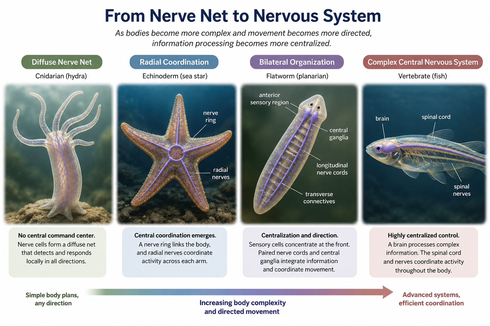
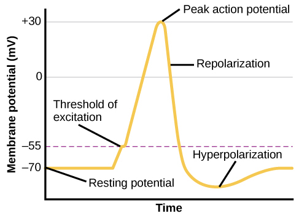
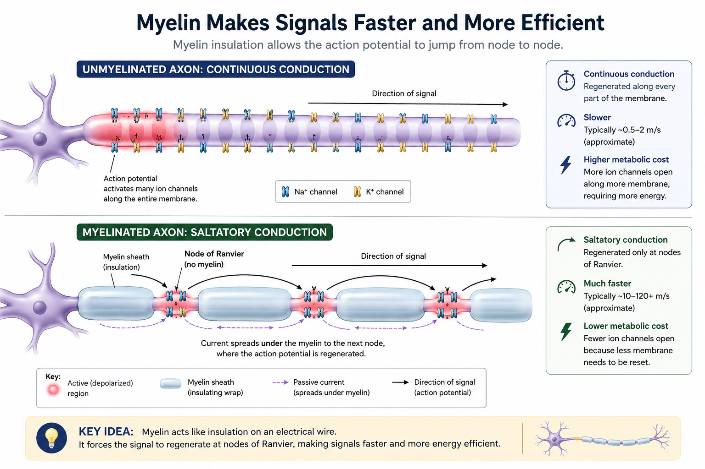
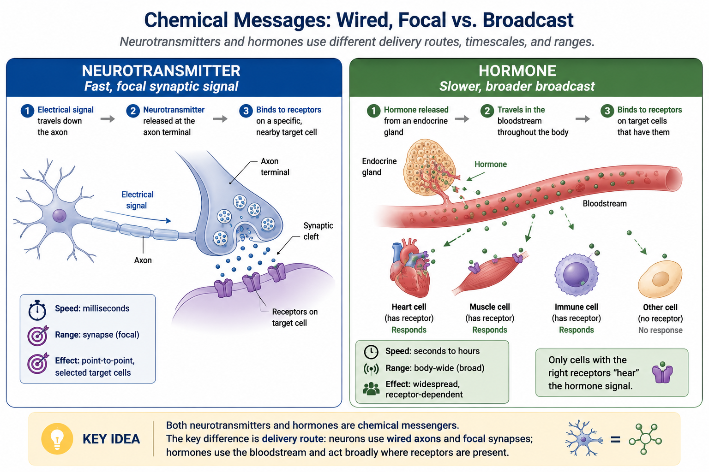
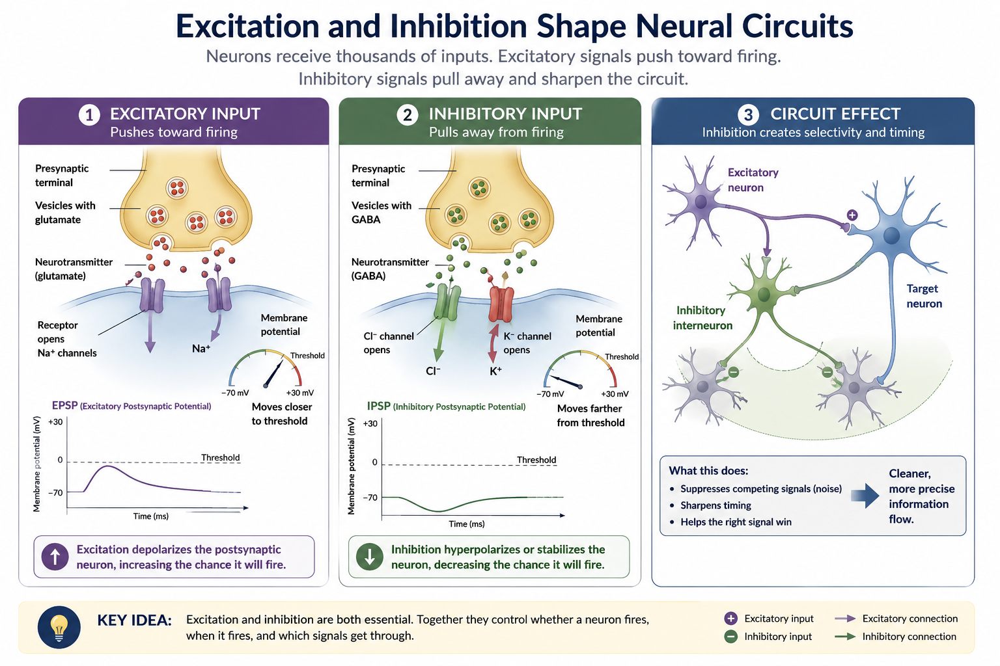
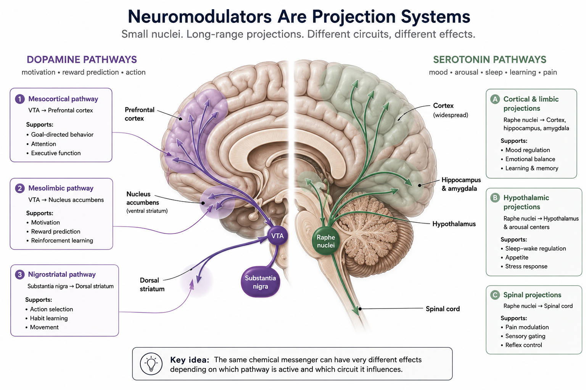
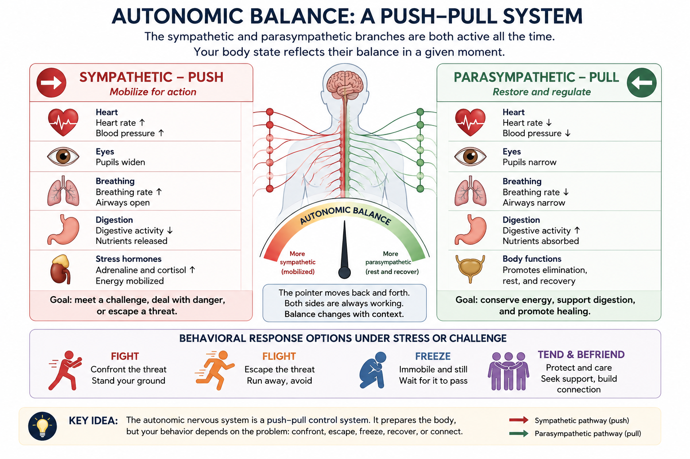
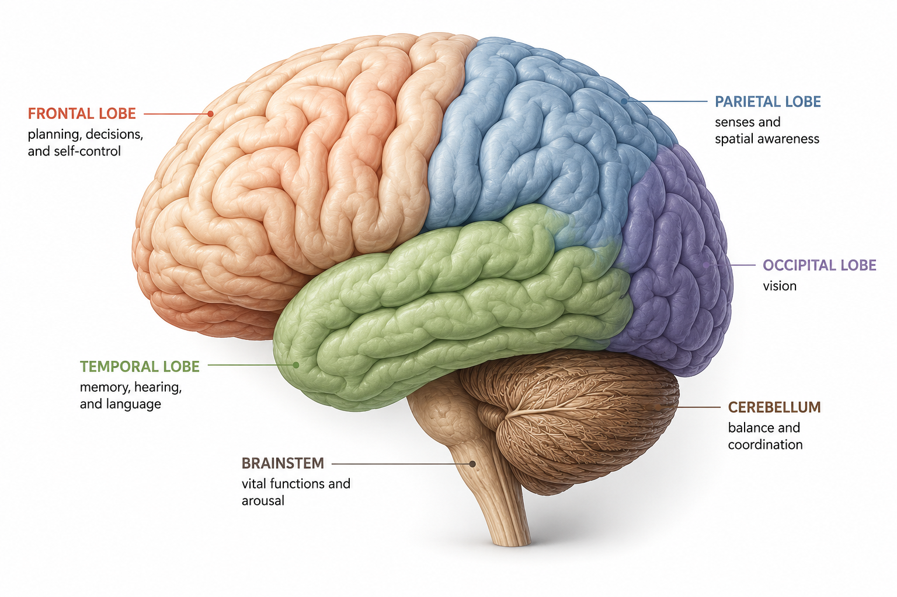

Neuroscience & Biological Bases of Behavior
Why Do We Have a Brain?
Most people, if asked, would say the brain exists so we can think, or be conscious, or reason. Those answers describe what a brain can do, not the problem a nervous system helps an organism solve.
Here is a more useful starting point. An organism with a bilateral body plan — a front end, a back end, a committed direction of movement — encounters the environment unevenly. The front arrives first. There is time and metabolic budget to process only so much of what arrives. Something must coordinate the next move: approach, withdraw, stop, persist, act, wait. That is the action-selection problem.
Directional movement helps explain why sensory structures and neural processing often concentrate toward the anterior end, a pattern called cephalization. Centralized nervous systems can integrate information from across the body and coordinate responses faster than each part acting locally. Treat that as a functional account, not a settled one-event history: the origins and repeated elaboration of centralized nervous systems remain actively debated (Arendt et al., 2008).
{kind=link}

That framing matters for this entire chapter. A brain is not, first and foremost, a “thinking organ.” It is a centralized coordination system that links sensing, prediction, memory, bodily state, and action. Human brains extend that machinery into imagined futures, social reasoning, and language — but thought remains embedded in a biological system built to regulate a living body and guide behavior.
Chapter question to carry through: What does the biology of the brain tell us about behavior — and what does it leave out?
“We only use 10% of our brains.” This is false, and demonstrably so. Brain imaging shows activity distributed broadly across the brain, and clinical evidence shows that damage to functionally important tissue reliably changes behavior — an organ with 90% spare capacity would not work that way. The adult human brain consumes roughly 20% of your resting energy budget while accounting for only about 2% of your body weight (Raichle & Gusnard, 2002). If most of it were idle, that would be an astonishingly expensive design. The more accurate picture is that your brain is active broadly and continuously, though not every region is equally active at every moment.
This chapter is about that machinery — what it is built from, how it signals, and how cells, chemicals, circuits, and bodies constrain what you think, feel, and do.
Where This Fits
This chapter is where the physical mechanism of behavior gets explained, and where the question “what problem might this solve?” gets applied to anatomy and chemistry. Everything later in this book leans on what is built here. Sensation and perception (Chapter 4) begins when receptors convert physical energy into neural signals. Consciousness and drugs (Chapter 5) depend on the signaling mechanisms introduced here. Learning (Chapter 7) returns to synaptic change and dopamine. Memory (Chapter 8) returns to medial-temporal systems. Development, emotion, stress, and psychological treatment all depend on the interaction of nervous systems, endocrine systems, and experience. If this chapter feels like infrastructure, that is because it is — but it is infrastructure you will reuse.
Learning Objectives
- Describe the structure of a neuron and explain how a typical action potential is generated and propagated.
- Distinguish neurotransmitters from hormones by delivery route, and explain why receptor and circuit context matter more than one-chemical psychological labels.
- Explain how excitation, inhibition, and neuromodulation change the probability and pattern of neural activity.
- Distinguish fast autonomic and slower endocrine components of stress regulation, and explain why repeated or prolonged activation can become costly (APA IPI Theme 3: biological, psychological, and social factors interact to shape behavior).
- Relate selected brain structures to the operations they contribute to, and explain why psychological functions emerge from networks rather than isolated regions (APA IPI Theme 5: our perceptions and biases, including beliefs about the brain, can be inaccurate).
- Evaluate the Phineas Gage and H.M. cases as evidence about frontal and medial-temporal systems.
- Generate a functional hypothesis for a neural or hormonal mechanism and distinguish that hypothesis from evidence about its immediate mechanism or evolutionary history.
Section 1: How Neurons Talk — Structure and the Action Potential
In 1848, a 25-year-old railroad foreman named Phineas Gage was tamping explosive powder into a hole in rock with a 13-pound iron rod when the powder detonated. The rod shot upward through his left cheek, behind his eye, and out through the top of his skull, landing some 80 feet away (Harlow, 1848). He survived. We return later to what may have changed in his behavior. For now, the case makes a simpler point: the consequences of brain injury depend on what tissue and connections are disrupted.
A neuron is a cell specialized for receiving, processing, and transmitting information through electrochemical signals. Three parts matter most for our purposes:
- Dendrites are branching extensions that receive input from other cells.
- The soma, or cell body, contains the nucleus and much of the machinery that keeps the cell alive.
- The axon is the output fiber that carries a signal away from the soma toward other cells, sometimes across a substantial distance.
Many axons are wrapped in myelin, a fatty insulating sheath produced by glial cells and interrupted by gaps called nodes of Ranvier. A synapse is the junction where one neuron communicates with another cell; in the chemical synapses emphasized here, an electrical signal in the first neuron triggers chemical communication across a tiny gap.

Name the three main parts of a neuron and state, in one sentence each, what each one does.
Neurons are not the only important cells in the nervous system. Glial cells occur in roughly similar numbers and make neural signaling possible. Their major functions include:
- Forming and maintaining myelin.
- Regulating the chemical environment around neurons.
- Supporting immune responses and removing debris.
- Providing metabolic support.
The term glia derives from a word meaning glue, and glia were historically treated as passive packing material. That picture was incomplete. Some glial cells respond dynamically to neural activity and influence synaptic or circuit processing (Allen & Lyons, 2018). This evidence establishes active contributions to nervous-system function; it does not establish that glia “think” in the same way neurons do.
The Action Potential
Here is the question those structures exist to answer: how does a signal move down an axon?
At rest, a typical neuron maintains a voltage difference across its membrane of about −70 millivolts — the resting potential. The exact value varies by cell. What matters is the separation of charged ions across a selectively permeable membrane, maintained by ion channels and energy-consuming pumps.
When input pushes the membrane past threshold — often illustrated near −55 mV — voltage-gated channels produce a rapid regenerative change in voltage called an action potential. Two immediate ion movements matter:
- Sodium entry drives depolarization.
- Potassium movement helps return the membrane toward rest.
The foundational all-or-nothing principle is that a suprathreshold spike is a stereotyped event rather than a miniature copy of stimulus strength. Stronger stimulation is represented mainly by firing patterns and the recruitment of additional neurons, not by making every spike proportionally taller. A brief refractory period after firing also helps limit firing rate and supports one-way propagation.
Our basic model comes from work that, on its face, had little to do with human psychology: Alan Hodgkin and Andrew Huxley’s experiments on the giant axon of the squid (Hodgkin & Huxley, 1952). The squid’s unusually large axon controls a rapid escape response and was large enough for the electrodes available at the time. Hodgkin and Huxley were not asking how humans think. They were asking how an excitable membrane produces a signal. The membrane principles they identified are widely conserved across animal nervous systems. This is the comparative method at its best: choose an organism in which evolution made a shared mechanism unusually legible.

Myelin matters because it changes how the signal propagates. On an unmyelinated axon, the action potential is regenerated along successive stretches of membrane. On a myelinated axon, electrical current spreads passively under the insulating myelin and the action potential is regenerated mainly at the nodes of Ranvier. This pattern is called saltatory conduction (from the Latin for “to leap”). The signal does not literally jump through empty space; insulation allows current to travel farther before the next regeneration. The result is faster and more energy-efficient conduction. Multiple sclerosis shows what happens when myelin is damaged: signaling becomes slower and less reliable across affected pathways.
{kind=link}

Neural tissue needs a continuous supply of oxygen and glucose to maintain the ion gradients that make signaling possible. You have probably had a hand or foot “fall asleep” after leaning on it awkwardly. Pressure can compress a peripheral nerve and its blood supply, disrupting normal signaling. When the pressure is released, signaling returns unevenly — pins and needles.
Try the Action Potential Threshold and All-or-Nothing Learning Lab. Predict first: if you reduce stimulus strength, will an individual action potential become proportionally smaller, or will the neuron eventually fail to fire? After interacting, explain how the nervous system can still represent stronger pressure.
Section 2: From Synapses to Circuits
An action potential gets a signal to the end of an axon. What happens next is not simply “more electricity.” The signal must cross a synapse, alter another cell, and sometimes change the operating state of an entire circuit.
Crossing the Synapse
Both are chemical messengers. The primary distinction is delivery route.
A neurotransmitter is released by a neuron onto a nearby target cell, usually across a synapse. The delivery is wired and focal: an electrical signal travels down a particular axon and triggers chemical release from its terminal. A hormone is released into the bloodstream and circulates broadly, affecting cells that have the appropriate receptor. Hormonal effects are often slower and longer-lasting than synaptic effects, but distance and timescale are consequences of the delivery route rather than exceptionless definitions. The same molecule can sometimes function in more than one category depending on where and how it is released.
Diagnostic question: an adrenal gland releases a chemical into the bloodstream, and receptor-bearing tissues across the body respond. Neurotransmitter or hormone? The route makes it a hormone.
{kind=link}

When an action potential reaches an axon terminal, vesicles fuse with the presynaptic membrane and release neurotransmitter molecules into the synaptic cleft. The molecules bind to receptors on the target cell. Receptors are not passive locks. Different receptor types activate different cellular processes, so the name of a neurotransmitter alone does not tell you what the next cell will do.
A synaptic signal must also end. Two important routes are reuptake, in which transporters move neurotransmitter out of the cleft, and enzymatic degradation, in which enzymes break it down. Diffusion and uptake by surrounding cells also matter for some transmitters. Selective serotonin reuptake inhibitors (SSRIs), for example, inhibit the serotonin transporter, slowing the removal of serotonin from extracellular space and increasing serotonin signaling. That describes an immediate pharmacological action; it does not by itself explain why clinical effects take time or prove that depression began as a serotonin deficit.
![Two-panel educational infographic showing how a chemical synaptic signal is sent and cleared. In the left panel, an action potential reaches a blue presynaptic terminal, neurotransmitter molecules are released into the synaptic cleft, and the molecules bind to receptors on a green postsynaptic neuron. Receptor opening changes sodium or potassium ion movement, altering the postsynaptic neuron’s likelihood of firing. In the right panel, one route of clearance is reuptake through transporter proteins in the presynaptic membrane. The other route shows neurotransmitter molecules that remain in the cleft being broken into inactive pieces by enzymes.](../images/ch03/ch03_synaptic_transmission_release_receptors_clearance.png)
An agonist binds to a receptor and activates it. An antagonist binds without activating the receptor and blocks or reduces activation by another molecule. Antagonist does not mean harmful: naloxone is an opioid-receptor antagonist that can reverse an opioid overdose. Agonists and antagonists return in Chapter 5 when we examine psychoactive drugs and in Chapter 13 when we examine treatment.
Excitation and Inhibition
Binding a receptor changes the receiving cell’s activity. In the adult brain, glutamate is the major transmitter for fast excitatory signaling and GABA is the major transmitter for fast inhibitory signaling. “Excitatory” means an input makes a target neuron more likely to fire; “inhibitory” means it makes firing less likely or stabilizes activity away from threshold. The receptor and target cell matter. A chemical does not carry one universal psychological instruction.
Inhibition is not a failure of signaling. Without coordinated inhibition, neural activity becomes noisy and unstable; extreme loss of inhibitory control can contribute to seizures. Inhibition sharpens timing, suppresses competing activity, and helps a circuit select one response rather than activating everything at once.
{kind=link}

Does the chemical name alone tell you whether the next cell will be excited, inhibited, or modulated? What additional information do you need?
Changing a Circuit
Some chemical signals do more than push one target cell toward or away from threshold. Neuromodulators change how groups of neurons respond — altering sensitivity, learning rate, signal-to-noise ratio, motivation, or readiness for action. Many neuromodulatory systems arise from relatively small nuclei—clusters of neuronal cell bodies within the central nervous system—whose axons project widely. The same molecule can therefore have different effects in different targets. Pathway, receptor, circuit, timing, and current task give the signal its psychological meaning.
{kind=link}

Dopamine is the clearest example of why this matters, and one of the most commonly mistaught. Popular accounts call it the “pleasure chemical.” That label confuses pleasure, learning, motivation, movement, and pursuit.
Phasic activity is brief and stimulus-linked. In well-studied reward-learning tasks, phasic activity in a subset of midbrain dopamine neurons often resembles a reward-prediction error signal:
- An unexpected reward produces a phasic increase in activity.
- After learning, that response can shift to the cue predicting the reward.
- If the expected reward fails to appear, activity can dip at the expected outcome time.
This is the classical pattern described by Schultz (1998). As Robert Sapolsky puts the teaching example: once a light reliably predicts reward, the important signal moves toward the light. The system is tracking what the organism should update and pursue, not simply measuring how pleasant the reward feels (Sapolsky, 2011).
That classical pattern is powerful, but it is not a complete definition of dopamine. Dopamine pathways also contribute to movement, salience, novelty, action vigor, and action selection. Even within phasic signaling, recent work documents heterogeneity that requires models beyond one scalar reward-error broadcast (Gershman et al., 2024). The useful principle is stable: expected outcome and actual outcome can be compared to update behavior. The overreach would be turning that principle into “dopamine does the same computation everywhere.”
Serotonin supplies a parallel correction. It is not the “happiness chemical.” Serotonin neurons project broadly, and their effects vary across receptor types, circuits, body states, and tasks. For this chapter, that is the point worth retaining. A catalog of alleged one-word functions would recreate the misconception the section is trying to remove.
The claim: Depression is caused by low serotonin, and antidepressants work by correcting that deficiency.
The problem: The simple serotonin-deficiency model is not supported as a general explanation of depression. One influential umbrella review found no consistent evidence that depression is characterized by a straightforward serotonin deficit, while also noting limitations and variation across the underlying evidence (Moncrieff et al., 2023).
This does not mean serotonin is irrelevant, and it does not mean antidepressants cannot help. It means efficacy does not prove original cause. Aspirin can reduce a headache; headaches are not caused by low aspirin. In the same way, a drug’s action on a transmitter system does not establish that a disorder began as a shortage of that transmitter. Involvement is not the same as deficiency. Treatment mechanism is not automatically disorder cause.
Practice the Chemical Imbalance Claim-Check. Classify claims as supported, overstated, or wrong/incomplete, then explain why medication efficacy cannot establish a one-chemical cause.
Try the Dopamine Prediction Error Learning Lab. Predict first: if a reward is fully predicted by a cue, what should a simplified reward-prediction-error model show when the reward arrives? After interacting, identify where the model helps and where it stops.
Before reading further, list three features of biological neurons that a simple artificial “neuron” probably leaves out.
Artificial neural networks borrowed an important abstraction: many connected units combine weighted inputs, produce outputs, and alter connection strengths through learning. That was enough to build powerful systems. But an artificial unit is not a tiny biological neuron. Standard artificial networks do not reproduce action potentials, transmitter chemistry, receptor diversity, metabolic constraints, endocrine regulation, development, or embodiment. The comparison is useful precisely because it reveals the abstraction. Engineers borrowed selected computational ideas and omitted most of the living machinery.
Section 3: Hormones and Whole-Body Signaling
Neural communication can be fast and targeted. Some coordination problems require a message to reach many tissues at once and last longer. That is the domain of the endocrine system — glands that release hormones into the bloodstream.
Hormones regulate growth, metabolism, reproduction, stress, and many other body-wide processes. They circulate broadly, but they do not affect every cell equally. Only cells with the relevant receptors respond. A bloodstream broadcast still requires a receiver.
Cortisol, released from the adrenal cortex—the adrenal gland’s outer layer—as part of the hypothalamic–pituitary–adrenal (HPA) axis, helps mobilize energy and reorganize priorities during challenge. It acts more slowly than the immediate sympathetic response and participates in a coordinated system that also includes catecholamines, glucagon, insulin, immune signaling, appraisal, and behavior. Cortisol is therefore neither “the stress chemical” nor simply toxic. Acute regulation can be useful. Repeated or prolonged dysregulation can carry costs.
Neuropeptides are signaling molecules made from short chains of amino acids and synthesized as larger precursor proteins. Neurons often package them in dense-core vesicles and use them for relatively slow, longer-lasting modulation (van den Pol, 2012). The category is defined by chemistry and cellular production — not by a requirement that a molecule be released both in the brain and into the bloodstream.
Oxytocin is a useful example because it can operate at more than one signaling scale. It is synthesized in hypothalamic neurons, released centrally within the nervous system, and also released into the bloodstream from the posterior pituitary. Its social effects are not uniformly warm or prosocial. They vary with person, context, relationship, and task; findings in humans are often smaller and less consistent than the “love hormone” label implies (Bartz et al., 2011). The defensible lesson is that oxytocin participates in context-dependent regulation of social and bodily processes. Chapter 10 returns to attachment and caregiving; Chapter 12 returns to stress regulation.
A neuron releases a messenger onto a nearby target. An adrenal gland releases a messenger into blood. A hypothalamic neuron releases a peptide centrally and from the posterior pituitary. Classify the routes, then explain why the molecule’s name alone is not enough.
Section 4: The Body’s Stress Response — Fast and Slow Coordination
Cortisol does not act alone. A stress response is coordinated across neural, endocrine, immune, cognitive, and behavioral systems. For Psych 101, the cleanest first distinction is speed and route.
The autonomic nervous system controls functions such as heart rate, vascular tone, digestion, and pupil size without requiring continuous conscious direction. Its sympathetic branch generally shifts organs toward mobilization: heart rate can rise, pupils can widen, and digestion can be deprioritized. Its parasympathetic branch generally supports maintenance, digestion, and recovery. “Fight-or-flight” and “rest-and-digest” are useful labels, but they become misleading if treated as two master switches.
Both branches exert ongoing, organ-specific influence. Their effects shift with breathing, posture, activity, digestion, temperature, and context. Slow breathing can alter cardiorespiratory coupling and heart-rate variability and thereby influence autonomic regulation, but it does not simply turn the sympathetic system off and the parasympathetic system on (Zaccaro et al., 2018).
“Rest and digest” is more literal than it sounds. The enteric nervous system — neurons embedded in the gut wall — contains more than 100 million neurons and communicates bidirectionally with the brain through neural, immune, endocrine, and microbial pathways (Furness, 2006; Cryan et al., 2019). This supports the ordinary observation that stress affects digestion. It does not support every commercial claim about a single food, supplement, or microbe controlling mood.
A functional hypothesis helps organize the system: rapid mobilization can improve the odds of responding effectively to danger, competition, uncertainty, or demanding action. But social evaluation is not biologically meaningless or evolutionarily novel. The sharper distinction is duration and controllability. A response that is useful for minutes can become costly when it is repeatedly triggered, remains unresolved, or cannot shut down. Sapolsky’s “sprints, not marathons” image captures that tradeoff without requiring the claim that stress systems evolved only for brief physical threats (Sapolsky, 2004).
Taylor and colleagues proposed tend-and-befriend as a framework for understanding some stress responses among women: under some conditions, caregiving and affiliation may be part of coping with threat rather than alternatives outside the stress response (Taylor et al., 2000). Oxytocin was proposed as one contributor. The framework is not a third autonomic branch, and its mechanism is not settled. Its teaching value is narrower: organisms have multiple context-dependent behavioral strategies, and the strategy depends on the problem, relationships, and available options.
{kind=link}

A sudden noise raises heart rate within seconds; a slower hormonal response helps mobilize energy over the following minutes. Which part is primarily neural, and which is endocrine?
Think of the last time your heart raced before a test, conversation, or performance. The response was real even if no physical attack was coming. What information was your body using — uncertainty, social evaluation, anticipated effort, possible loss? A functional explanation begins with the problem the organism is responding to. It does not assume that one explanation is the evolutionary history.
Section 5: The Brain — Specialization Without Lego-Brain Thinking
We now have the building blocks: electrical signaling, chemical transmission, circuit modulation, and body-wide regulation. This section scales back up. How do those mechanisms become memory, language, emotion, planning, and action?
Studying the Brain
fMRI (functional magnetic resonance imaging) indirectly tracks neural activity through the blood-oxygen-level-dependent, or BOLD, signal. Neural activity changes local blood flow and oxygenation through neurovascular coupling; fMRI detects the resulting changes in deoxyhemoglobin rather than recording neurons directly. This provides useful spatial localization, but the hemodynamic response unfolds over seconds—much slower than EEG—and typically peaks several seconds after neural activity begins (Polimeni & Lewis, 2021). An activation map usually represents a comparison between conditions, not a photograph of a thought. It does not by itself establish causation.
Other methods answer different questions. EEG records voltage fluctuations using electrodes placed on the scalp. It has excellent temporal resolution but relatively coarse spatial localization. PET can track metabolism or receptor-related processes using radioactive tracers. Lesions can provide causal evidence about what a damaged system was necessary for, but naturally occurring injuries are rarely clean experiments. Animal studies allow manipulations that would be impossible in humans, while raising questions about generalization. Good neuroscience converges across methods.
A Compact Map of Selected Structures
{kind=link}

| Structure | Major contribution emphasized here | Do not reduce it to |
|---|---|---|
| Frontal lobe and prefrontal cortex | Planning, action selection, voluntary movement, regulation, and goal maintenance | “The personality center” or a single executive module |
| Parietal lobe | Integrating sensory information and supporting spatial representation and action | A passive touch map |
| Temporal lobe | Auditory processing, language-related processing, and medial-temporal memory systems | “The memory lobe” |
| Occipital lobe | Visual processing through multiple interacting pathways | A camera screen |
| Hippocampus and surrounding medial-temporal structures | Supporting new declarative learning and relational memory | A storage bin that contains all memories |
| Amygdala | Learning about biologically relevant events, including threat, and influencing attention and memory | A dedicated fear organ |
| Hypothalamus | Coordinating homeostasis, motivated behavior, autonomic control, and endocrine signaling | One drive center |
| Brainstem and cerebellum | Vital regulation, arousal, movement coordination, prediction, and learning | Merely “primitive” support hardware |
Brain Regions Are Specialized, but Behavior Is Networked
Different regions do contribute different operations. Localization is real. The common mistake is Lego-brain thinking: one region for fear, one for memory, one for morality, each working alone.
The more accurate model is networked specialization. The amygdala contributes to detecting and learning about biologically significant events, including threat, but its effects depend on sensory pathways, hippocampal context, prefrontal regulation, body state, and action systems. Calling it a “fear center” turns a network contributor into a dedicated organ containing fear (LeDoux, 2012). The prefrontal cortex contributes to planning and regulation, but only through its interactions with other systems. Damage to one node or connection can disrupt a function without proving that the entire function lived inside that tissue.
When a headline says scientists found “the brain region responsible for” a political belief, moral judgment, or personality trait, ask three questions: What method was used? What comparison produced the result? What larger network and behavior were required for the task?
Return to Gage. Harlow’s 1848 report documented the injury. His 1868 follow-up contained the behavioral description that entered psychology textbooks: people who had known Gage reportedly regarded him as less reliable, less restrained, and less able to pursue plans after the accident (Harlow, 1868).
Modern researchers have used Gage’s preserved skull to estimate the rod’s path. Damasio and colleagues’ 1994 reconstruction emphasized prefrontal damage. A later reconstruction estimated substantial left frontal damage and widespread disruption of white-matter connections—bundles of axons linking brain regions—while also showing why no reconstruction can recover the missing brain tissue with certainty (Damasio et al., 1994; Van Horn et al., 2012).
What does the case support? It is consistent with frontal and connected networks contributing to planning, inhibition, social regulation, and stable goal pursuit. What does it not establish? It does not provide a clean lesion of one precisely known region, a complete premorbid personality measure, or controlled evidence that every reported change came from one damaged structure. The case makes frontal-network involvement plausible; its limitations show why a vivid case is not a controlled lesion experiment.
What does the Gage case make plausible about frontal networks? What remains uncertain because the tissue, behavioral baseline, and lesion path cannot be reconstructed perfectly?
In 1953, a 27-year-old man later known publicly as Henry Molaison underwent surgery for severe epilepsy. The operation removed tissue bilaterally from the medial temporal lobes, including much of the entorhinal region, amygdala, and portions of the hippocampal formation. Afterward, H.M. developed profound difficulty forming new declarative memories. He could carry on a conversation and acquire some new motor skills, yet later have no conscious memory of the practice (Scoville & Milner, 1957).
H.M.’s case showed that bilateral disruption of the hippocampal–entorhinal system can severely impair the formation of new declarative, or explicit, long-term memories while leaving some procedural learning relatively intact. It did not show that H.M. had a pure hippocampal lesion or that all declarative memories are permanently stored in the hippocampus. Postmortem reconstruction found substantial residual hippocampal tissue along with severe entorhinal disconnection and other pathology (Annese et al., 2014). Nor did the case prove a simple rule that the hippocampus forms memories but never participates in their later representation. Chapter 8 develops the more complete systems account.
The strong conclusion is still strong: memory is not one faculty stored in one place. Different forms of learning depend on partly separable systems.
Chapter Summary
The chapter question was: what does the biology of the brain tell us about behavior, and what does it leave out? Biology is especially powerful for explaining substrate, signaling, constraints, and causal contribution. It is less complete as an explanation of meaning, context, and what an organism is trying to accomplish in a particular situation.
Directional movement and limited processing capacity make action selection a useful functional starting point for understanding cephalization and nervous-system centralization. The exact evolutionary history remains debated. The durable idea is that nervous systems integrate information and coordinate action across a body.
Neurons receive input, integrate it, and communicate through electrochemical events. A typical suprathreshold action potential is regenerative and stereotyped; stronger stimulation is represented mainly by firing patterns and neural recruitment. Myelin allows current to spread efficiently between nodes where the spike is regenerated. Glial cells are essential participants in maintaining that signaling environment.
Chemical signaling operates at several scales. Neurotransmitters use wired neural delivery and focal release; hormones travel through the bloodstream and act where receptors are present. At synapses, receptor type determines what a chemical message does. Excitation and inhibition work together to produce stable, selective circuits. Neuromodulators adjust circuit state. In selected reward-learning tasks, phasic activity in some midbrain dopamine neurons resembles reward-prediction error, but dopamine is not simply pleasure and is not reducible to one computation. The simple low-serotonin theory of depression is unsupported; antidepressant efficacy does not establish a deficiency cause.
Hormones coordinate body-wide processes. Cortisol participates in energy mobilization and longer-timescale stress regulation. Neuropeptides are peptide signaling molecules, not chemicals defined by dual central and peripheral release. Oxytocin illustrates how one molecule can act at multiple scales and produce context-dependent effects.
Stress regulation combines fast autonomic and slower endocrine processes. Sympathetic and parasympathetic branches exert simultaneous, shifting, organ-specific influence. Acute mobilization can be useful; repeated or prolonged activation can become costly. Tend-and-befriend is a proposed behavioral framework, not a third autonomic branch.
Brain regions are specialized contributors within networks. Gage is consistent with frontal-network contributions to planning and regulation, but the anatomy and behavioral record are uncertain. H.M. established the critical role of medial-temporal systems and the dissociation between declarative and procedural learning, not a simple hippocampus-only rule.
The brain is biological all the way down. Behavior is not explained until that biology is connected to circuits, bodies, environments, histories, and the problem the organism is trying to solve.
Connections
| Concept from this chapter | Reappears in | Why it matters there |
|---|---|---|
| Reward-prediction error and dopamine | Ch. 7 — Learning | A restricted dopamine teaching model helps explain how unexpected outcomes can update future behavior |
| Agonists, antagonists, excitation, and inhibition | Ch. 5 — Consciousness; Ch. 13 — Psychological Disorders & Therapy | Drug effects depend on receptor action and circuit context, not simply on a drug being a “stimulant” or “depressant” |
| Hypothalamic regulation | Ch. 6 — Sleep | The suprachiasmatic nucleus is a hypothalamic clock that helps organize circadian timing |
| Medial-temporal memory systems and H.M. | Ch. 8 — Memory | H.M. demonstrates separable memory systems and helps dismantle the video-camera model of memory |
| Autonomic and endocrine stress regulation | Ch. 12 — Emotion, Stress & Coping | Acute mobilization, prolonged activation, appraisal, and recovery become the foundation for allostatic-load reasoning |
| Oxytocin as a context-dependent neuropeptide | Ch. 10 — Lifespan Development; Ch. 12 — Emotion, Stress & Coping | The same signaling system can contribute differently across attachment, caregiving, affiliation, and stress contexts |
| Action potentials and receptors | Ch. 4 — Sensation & Perception | Sensory receptors convert environmental energy into the neural signals introduced here |
Review Questions
1. The all-or-nothing principle of the action potential means that:
Show answer & rationale
Answer: b. Why (a) is tempting: stronger stimulation does produce a stronger experience, but nervous systems represent that intensity mainly through firing patterns and recruitment, not by scaling every spike’s height.
2. Which feature most directly distinguishes a neurotransmitter from a hormone?
Show answer & rationale
Answer: c. Distance and timescale often differ because the routes differ, but the primary distinction is how the message is delivered.
3. A transmitter binds to two receptor types in two different circuits and produces opposite effects. What principle does this demonstrate?
Show answer & rationale
Answer: b. The molecule is part of the message, not the complete psychological instruction.
4. In the classical reward-learning pattern discussed in this chapter, which statement is most accurate?
Show answer & rationale
Answer: b. Why (a) is tempting: “pleasure chemical” is memorable. The evidence supports a restricted and powerful prediction-error pattern, not a universal definition of dopamine.
5. A headline says, “fMRI reveals the brain region that causes political opinions.” What is the strongest immediate objection?
Show answer & rationale
Answer: b. The BOLD response unfolds over seconds, and an activation difference does not establish that one region caused the behavior or acted alone.
6. Which pairing correctly distinguishes two components of stress regulation?
Show answer & rationale
Answer: a. Stress regulation coordinates fast neural and slower endocrine routes rather than relying on one “stress chemical.”
7. Why can a useful stress response become costly?
Show answer & rationale
Answer: b. The key distinction is not “physical threat good, modern stress fake.” It is how strongly, how long, and how controllably regulatory systems remain engaged.
8. What do modern reconstructions add to the Phineas Gage case?
Show answer & rationale
Answer: b. The skull constrains possible paths, but the brain tissue is gone and the behavioral record is sparse. The case supports a network contribution, not a clean one-region experiment.
9. What is the strongest conclusion from H.M.’s case?
Show answer & rationale
Answer: b. H.M.’s surgery involved multiple medial-temporal structures, and postmortem analysis found residual hippocampal tissue. The declarative–procedural dissociation is the clean teaching result.
10. Why did Hodgkin and Huxley’s squid-axon work matter for human neuroscience?
Show answer & rationale
Answer: b. The comparative method uses a tractable organism to reveal a widely conserved mechanism without treating that species as a simpler human.
11. A medication reduces symptoms by altering serotonin signaling. What does that result establish?
Show answer & rationale
Answer: c. This is the aspirin-and-headache distinction: treatment action and disorder cause are different inferential questions.
Key Terms
- Action potential
- A rapid regenerative electrical event that travels along an axon after membrane voltage crosses threshold.
- All-or-nothing principle
- The teaching rule that a typical suprathreshold action potential is a stereotyped event rather than a signal whose height scales directly with stimulus strength.
- Autonomic nervous system
- Peripheral neural pathways that regulate organs such as the heart, blood vessels, pupils, and digestive tract through sympathetic and parasympathetic influences.
- Cephalization
- Concentration of sensory and neural processing toward an organism’s anterior end, often associated with directional movement.
- Cortisol
- A steroid hormone released through the HPA axis that participates in energy mobilization and longer-timescale stress regulation.
- Dopamine
- A neuromodulator involved in multiple functions; in selected reward-learning tasks, phasic activity in some midbrain dopamine neurons resembles reward-prediction error.
- Endocrine system
- Glands and tissues that release hormones into the bloodstream to coordinate processes across the body.
- Excitation and inhibition
- Neural influences that increase or decrease a target cell’s probability of firing and jointly shape circuit timing, stability, and selection.
- Glial cells
- Non-neuronal nervous-system cells that support signaling through myelination, chemical regulation, immune functions, debris removal, and metabolic support.
- Hormone
- A chemical messenger released into the bloodstream that acts on cells with matching receptors.
- Medial temporal lobe
- A set of interconnected structures, including hippocampal and surrounding cortical regions, critical for declarative learning and memory.
- Myelin
- Insulating material around many axons that allows current to spread efficiently between nodes where action potentials are regenerated.
- Neuromodulator
- A chemical signal that alters how neurons or circuits respond, rather than carrying one fixed excitatory, inhibitory, or psychological instruction.
- Neuron
- A cell specialized for receiving, integrating, and transmitting electrochemical signals.
- Neuropeptide
- A peptide signaling molecule synthesized as a precursor protein and often used by neurons for slower, longer-lasting modulation.
- Neurotransmitter
- A chemical messenger released by a neuron onto a target cell, commonly across a synapse.
- Parasympathetic nervous system
- Autonomic pathways that generally support maintenance, digestion, and recovery, with effects that vary by organ and context.
- Prefrontal cortex
- Frontal cortical regions that contribute to planning, goal maintenance, regulation, and flexible action through distributed networks.
- Receptor
- A protein that detects a signaling molecule and converts binding into a cellular effect.
- Reuptake
- Removal of a neurotransmitter from extracellular space by transporter proteins, often into the releasing cell or nearby cells.
- Sympathetic nervous system
- Autonomic pathways that generally shift organs toward mobilization and action.
- Synapse
- A junction where one cell communicates with another; in a chemical synapse, transmitter release bridges the gap between cells.
Further Reading
Noba Project — Neurons
https://nobaproject.com/modules/neurons
A peer-reviewed open overview of neuron structure, action potentials, and synaptic communication.
Noba Project — Hormones & Behavior
https://nobaproject.com/modules/hormones-behavior
A behavioral-endocrinology overview that extends beyond the stress examples used here.
Noba Project — The Brain and Nervous System
https://nobaproject.com/modules/the-brain-and-nervous-system
A broader anatomical reference for students who want more region-level detail.
Harlow, J. M. (1848). Passage of an iron rod through the head.
Boston Medical and Surgical Journal, 39(20), 389–393.
The original acute report of Gage’s injury.
Harlow, J. M. (1868). Recovery from the passage of an iron bar through the head.
Publications of the Massachusetts Medical Society, 2(3), 327–347.
The later report containing the behavioral description that shaped the textbook narrative.
Sapolsky, R. M. (2004). Why Zebras Don’t Get Ulcers (3rd ed.). Holt.
An accessible extended treatment of stress physiology, appraisal, and the costs of prolonged activation.
References
Full citations for factual claims made in this chapter. Further Reading above is curated separately for student exploration.
Full citations for factual claims made in this chapter. Further Reading above is curated for student exploration; this list supports verification.
Allen, N. J., & Lyons, D. A. (2018). Glia as architects of central nervous system formation and function. Science, 362(6411), 181–185. https://doi.org/10.1126/science.aat0473
Annese, J., Schenker-Ahmed, N. M., Bartsch, H., Maechler, P., Sheh, C., Thomas, N., Kayano, J., Ghatan, A., Bresler, N., Frosch, M. P., Klaming, R., & Corkin, S. (2014). Postmortem examination of patient H.M.’s brain based on histological sectioning and digital 3D reconstruction. Nature Communications, 5, 3122. https://doi.org/10.1038/ncomms4122
Arendt, D., Denes, A. S., Jékely, G., & Tessmar-Raible, K. (2008). The evolution of nervous system centralization. Philosophical Transactions of the Royal Society B: Biological Sciences, 363(1496), 1523–1528. https://doi.org/10.1098/rstb.2007.2242
Bartz, J. A., Zaki, J., Bolger, N., & Ochsner, K. N. (2011). Social effects of oxytocin in humans: Context and person matter. Trends in Cognitive Sciences, 15(7), 301–309. https://doi.org/10.1016/j.tics.2011.05.002
Cryan, J. F., O’Riordan, K. J., Cowan, C. S. M., Sandhu, K. V., Bastiaanssen, T. F. S., Boehme, M., Codagnone, M. G., Cussotto, S., Fulling, C., Golubeva, A. V., Guzzetta, K. E., Jaggar, M., Long-Smith, C. M., Lyte, J. M., Martin, J. A., Molinero-Perez, A., Moloney, G., Morelli, E., Morillas, E., … Dinan, T. G. (2019). The microbiota–gut–brain axis. Physiological Reviews, 99(4), 1877–2013.
Damasio, H., Grabowski, T., Frank, R., Galaburda, A. M., & Damasio, A. R. (1994). The return of Phineas Gage: Clues about the brain from the skull of a famous patient. Science, 264(5162), 1102–1105.
Furness, J. B. (2006). The enteric nervous system. Blackwell Publishing.
Gershman, S. J., Assad, J. A., Datta, S. R., Linderman, S. W., Sabatini, B. L., Uchida, N., & Wilbrecht, L. (2024). Explaining dopamine through prediction errors and beyond. Nature Neuroscience, 27, 1645–1655. https://doi.org/10.1038/s41593-024-01705-4
Harlow, J. M. (1848). Passage of an iron rod through the head. Boston Medical and Surgical Journal, 39(20), 389–393.
Harlow, J. M. (1868). Recovery from the passage of an iron bar through the head. Publications of the Massachusetts Medical Society, 2(3), 327–347.
Hodgkin, A. L., & Huxley, A. F. (1952). A quantitative description of membrane current and its application to conduction and excitation in nerve. Journal of Physiology, 117(4), 500–544.
LeDoux, J. (2012). Rethinking the emotional brain. Neuron, 73(4), 653–676.
Moncrieff, J., Cooper, R. E., Stockmann, T., Amendola, S., Hengartner, M. P., & Horowitz, M. A. (2023). The serotonin theory of depression: A systematic umbrella review of the evidence. Molecular Psychiatry, 28, 3243–3256. https://doi.org/10.1038/s41380-022-01661-0
Polimeni, J. R., & Lewis, L. D. (2021). Imaging faster neural dynamics with fast fMRI: A need for updated models of the hemodynamic response. Progress in Neurobiology, 207, 102174. https://doi.org/10.1016/j.pneurobio.2021.102174
Raichle, M. E., & Gusnard, D. A. (2002). Appraising the brain’s energy budget. Proceedings of the National Academy of Sciences, 99(16), 10237–10239.
Sapolsky, R. M. (2004). Why zebras don’t get ulcers (3rd ed.). Holt.
Sapolsky, R. M. (2011, February 15). Dopamine jackpot! Sapolsky on the science of pleasure [Pritzker Lecture]. California Academy of Sciences.
Schultz, W. (1998). Predictive reward signal of dopamine neurons. Journal of Neurophysiology, 80(1), 1–27.
Scoville, W. B., & Milner, B. (1957). Loss of recent memory after bilateral hippocampal lesions. Journal of Neurology, Neurosurgery, and Psychiatry, 20(1), 11–21.
Taylor, S. E., Klein, L. C., Lewis, B. P., Gruenewald, T. L., Gurung, R. A. R., & Updegraff, J. A. (2000). Biobehavioral responses to stress in females: Tend-and-befriend, not fight-or-flight. Psychological Review, 107(3), 411–429.
van den Pol, A. N. (2012). Neuropeptide transmission in brain circuits. Neuron, 76(1), 98–115. https://doi.org/10.1016/j.neuron.2012.09.014
Van Horn, J. D., Irimia, A., Torgerson, C. M., Chambers, M. C., Kikinis, R., & Toga, A. W. (2012). Mapping connectivity damage in the case of Phineas Gage. PLOS ONE, 7(5), e37454. https://doi.org/10.1371/journal.pone.0037454
Zaccaro, A., Piarulli, A., Laurino, M., Garbella, E., Menicucci, D., Neri, B., & Gemignani, A. (2018). How breath-control can change your life: A systematic review on psycho-physiological correlates of slow breathing. Frontiers in Human Neuroscience, 12, 353. https://doi.org/10.3389/fnhum.2018.00353